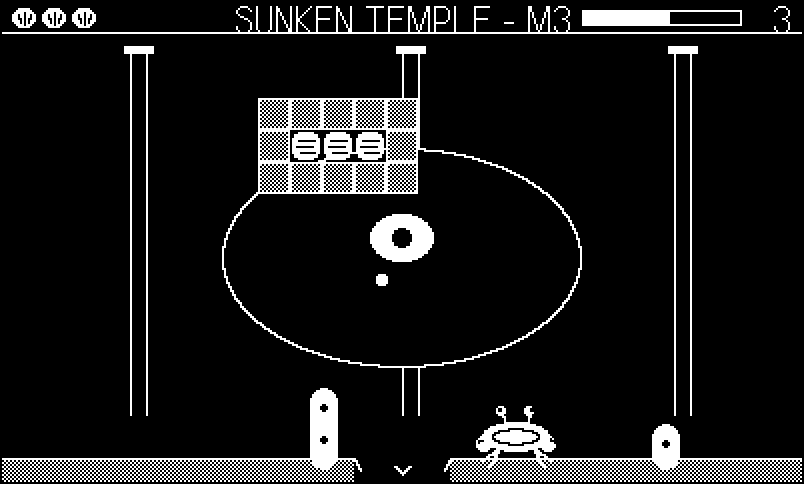
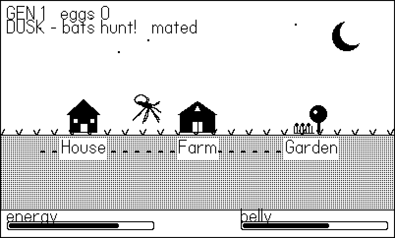
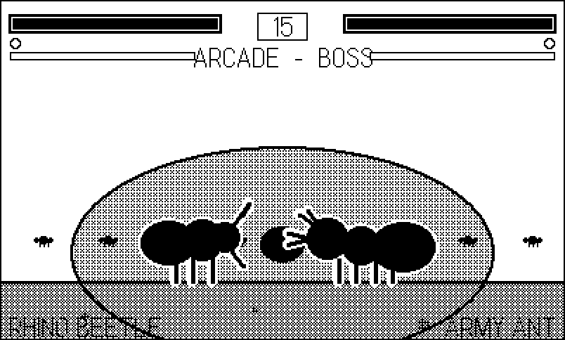
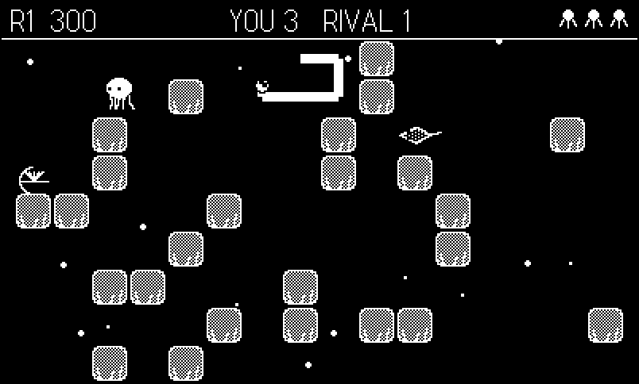
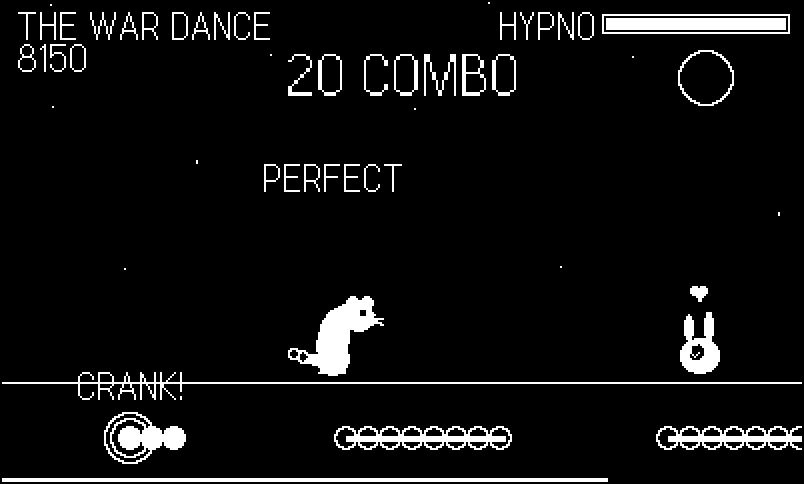
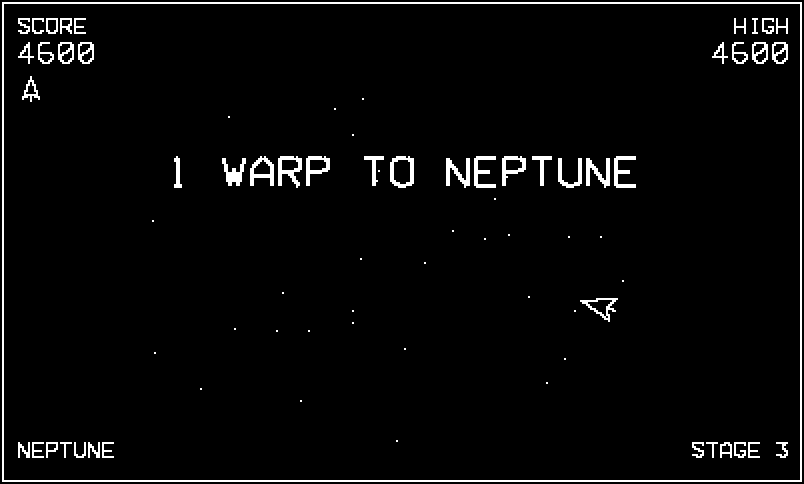
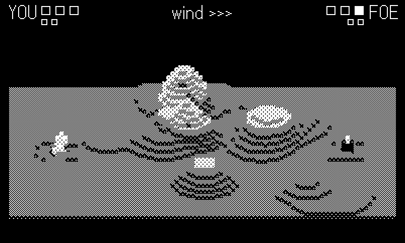
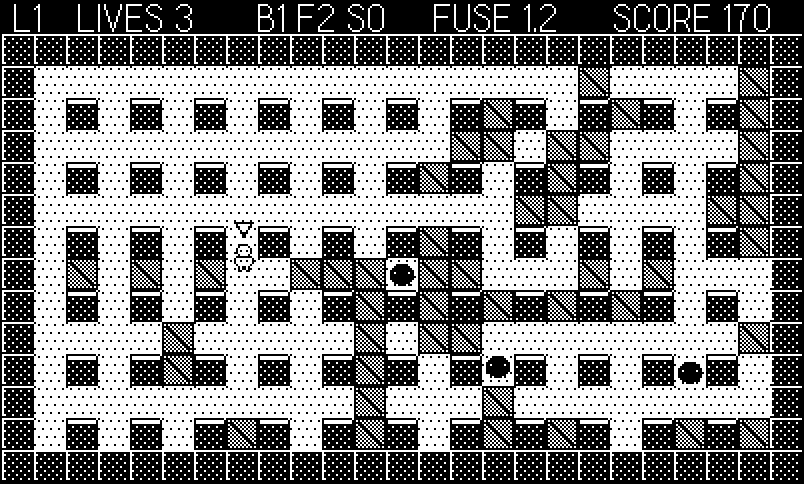
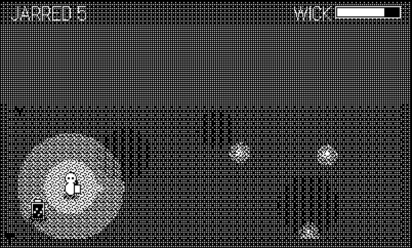
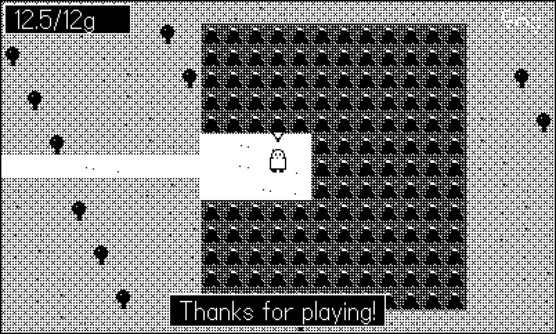

Appendix E — The Case-Study Games
The code quoted in this book’s sidebars comes from real, shipped Playdate games — more than sixty of them, built by the author on the house style this book teaches. This appendix is the cast list: what each game is, and where and why the book quotes it. Source for the published games lives in the github.com/plaidate organization; quotes in the chapters carry repo/path.lua:line attributions so you can read every excerpt in context.
The catalog is in two halves: fifteen standalone games, then the seven collections — shared engines with a fleet of games on top, forty-nine games between them — plus one reusable module. Five of those collections get a whole chapter to themselves in Part VII. Screenshots are the games’ own repository screenshot.png files, upscaled 2x nearest-neighbor like every other figure in the book.
E.1 Standalones
E.1.1 Molt
An arkanoidvania: you are a crab, your carapace is the paddle, and a bounced pearl smashes coral across a connected undersea world of 28 rooms, 6 zones, and 7 bosses. The largest game in the fleet, and the book’s favorite witness for “does this pattern survive contact with a real game.”

Cited in: Chapter 2 (the twenty-import main.lua that demonstrates module-per-concern at scale), Chapter 3 (the if/elseif flavor of the mode machine, and the EMA update-cost wrapper that feeds Chapter 19), Chapter 12 (fourteen all-synth voices in one sfx.lua, zero audio files), Chapter 13 (its step-clock music module), Chapter 17 (save.lua quoted as a complete file — the nil-coalescing load pattern), and Chapter 18, where its 47-line smoke harness is the direct ancestor of this book’s own (Appendix D). Its full-game-beating autopilot — BFS recovery, offset aiming, persistent boss wounds — is the existence proof behind that chapter’s claims.
E.1.2 Blood and Whine
A mosquito continuing her bloodline: nectar to survive, blood to breed, and every host can end you. A full procedural 1-bit art sweep gave it the book’s favorite dither lesson.

Cited in: Chapter 4 — its draw.lua gray(d) helper, and the scar behind that chapter’s central warning: setDitherPattern’s argument is transparency, not darkness (low = dark), a polarity that cost this game an art pass.
E.1.3 Fightin’ Chitin
A one-on-one 2D fighting game starring the insect world’s real brawlers: two attack buttons, motion inputs, a crank-driven Frenzy super, and a six-fighter archetype roster.

Cited in: Chapter 4 (HUD-versus-stage dither discipline in stage.lua), Chapter 10 (the character-select wheel in select.lua), Chapter 14 (fighter AABBs in fight.lua — the strict-inequality overlap test), and Chapter 15 (KO hitstop: bodies hang a beat before falling).
E.1.4 Clam Jumper
An ocean-bed take on the 1982 arcade game Claim Jumper: pick sea star, octopus, or ray — each with different verbs — against a rival species in a connected coral maze.

Cited in: Chapter 9 (its input module’s snapshot shape) and Chapter 16, where its Util.pathNext BFS — one flood fill shared by the enemy AI and the autopilot — is the chapter’s founding example of “the bot is just another consumer of the game’s own pathfinding.”
E.1.5 Weasel War Dance
A rhythm game about the mustelid family’s greatest trick: the frenzied “war dance” stoats and weasels really do perform. Eight mustelids, small to large, dance to a clock-driven step sequencer.

Cited in: Chapter 13, three times — its conductor.lua is the book’s reference implementation of the zero-drift step sequencer: a clock that schedules notes by beat arithmetic rather than trusting callbacks to arrive on time. A rhythm game is the genre least able to tolerate drift, which is what makes its conductor the load-bearing witness.
E.1.6 Archer’s Zoomie Circuit
Wind up the whippet. A one-button-and-crank racing game starring the author’s actual dog (who also, by seniority, supplied this book’s cover). Cited in: Chapter 15 — notably as the only game in the fleet built on playdate.timer, which is exactly why that chapter trusts it for the timer coverage the other sixty-three games skip.
E.1.7 Bauble
A 1-bit color-matching bubble shooter: crank to aim, fire, pop clusters of three or more. Cited in: Chapter 3 — its gamestate.lua documents the whole legal-mode enum in a comment at the declaration, the convention the skeleton adopts.
E.1.8 Bearing
A tilt-controlled marble maze: the accelerometer rolls a steel bearing through a labyrinth, past holes, against the clock. Cited in: Chapter 11 — accelerometer smoothing from its main.lua, the difference between raw tilt (jittery) and playable tilt.
E.1.9 The supporting bestiary
Seven more standalones inform chapters without being quoted line by line; their lessons arrived as design rules rather than excerpts:
- Squirl — a squirrel Metroidvania/parkour game; the Magic Acorn swaps you between six squirrel species, each a traversal key. Its full-game-beating autopilot (31 rooms, 6 bosses) is part of the evidence base for Chapter 18’s claim that autopilots scale to whole games.
- AnEnemy — sea-anemone territorial warfare: crank-engorged acrorhagi, a feed-versus-fight economy, tides. Its four-strain campaign ships with a full-campaign autopilot in the same tradition.
- Bin Night — a tag-team trash heist (raccoon, ibis, cat versus the dawn garbage truck). Contributed the “summon what the test needs” autopilot style and heartbeat time-series tracing to the toolbox Chapter 18 teaches.
- Peckish — a killdeer foraging the tideline: a wet-band worm economy behind receding waves, with the crank performing the broken-wing lure. A study in mapping one crank to one strong verb (Chapter 10’s design rule).
- Nectar Rush — territorial-hummingbird feeder defense over a shared nectar pool; crank to sip. Its autopilot fails in stages — deliberately losing in controlled ways — a testing idea that resurfaces in Chapter 18.
- Fairway and Roost — top-down golf across larger-than-screen procedural holes, and an egg-gathering aerial lance-jousting arcade — round out the fleet, exercising the big-world camera patterns of Chapter 7 and the flap-physics tuning habits of Chapter 14 respectively.
E.2 The collections
Seven repositories are not single games but engines with fleets on top. When a chapter quotes vec/ or tiles/core/, it is quoting code that a dozen games run through every frame — the strongest battle-testing in the catalog. Five of the seven — Phosphor, Tiles, Voxel, Dither, and Lore — are read end to end in Part VII, each in a chapter of its own with the engine vendored into a runnable example.
E.2.1 Phosphor
Sixteen vector arcade games — white beam lines on black, the way the cabinets drew them — on one thin shared library, vec/.

Cited in: Chapter 21 — an entire chapter walks the vec/ engine module by module (the mathematics, the code, and all sixteen games) and is this collection’s primary citation. Also Chapter 5 (the beams.lua stroke font — text drawn as line segments, no bitmaps), Chapter 8 (its mat.lua rotation matrices, proj.lua near-plane clipping, and shapes.lua asteroid generation are that chapter’s spine), Chapter 10 (Gyre, the collection’s signature crank game — 1:1 angular control), Chapter 15 (the shared particle pool in vec/fx.lua), and Chapter 17 (the cabinet-style shared attract mode and its high-score table in attract.lua).
E.2.2 Classics
Both volumes of Code the Classics, ported as original Lua implementations sharing one core — a Pong, a Frogger, a Centipede, a soccer game, a brawler, and five more. Less quoted than lived-in: this port marathon (ten games in one push) is where the headless smoke-testing workflow was first hardened — the pcall-to-datastore error trap, the writeToFile visual debugging, and the asset-conversion checks that resurface across Chapter 5, Chapter 18, and Appendix C.
E.2.3 Voxel
Original 1-bit voxel games on one thin engine — a Voxatron-style world of shaded columns in a 3/4 projection.

Cited in: Chapter 23 — an entire chapter walks the core/ engine module by module (the render-once background with exact hidden-face culling, Vox.carve’s dirty-strip craters, the occlusion ghost, both physics families, the shared aim solver, the Kit.run cabinet, and all ten games) and is this collection’s primary citation. Also Chapter 8 (the two-add 3/4 projection, and the collection’s design rule quoted there: a voxel game must use height and volume — dig, lob, climb, flood, fall — to earn the engine), Chapter 10 (Lob’s wind-and-release crank mapping), and Chapter 16 (Lob again: area-of-effect tools must check for friendlies, thrower included).
E.2.4 Tiles
Original tile-and-sprite games built the way you would build for the NES or Game Boy: a fixed 16px grid, a scrolling camera, and four games (Blast, Spirit, Relic, Burrow) on the shared core.

Cited in: Chapter 22 — an entire chapter walks the core/ engine module by module (the tile-cache cost model, the physics, the BFS field, the camera, and all four games) and is this collection’s primary citation. Also Chapter 5 (the fully procedural tileset in tmap.lua: four games shipped without a drawing tool ever being opened), Chapter 7 (tcam.lua’s follow-and-clamp camera and the pre-rendered background repaint strategy), Chapter 12 (tsnd.lua noise sweeps), Chapter 14 (tphys.lua — the fixed-DT tile physics and 1px substep at that chapter’s core, plus Blast’s walkable-bomb isSolid and Burrow’s falling-boulder variant), and Chapter 16 (Blast’s radius checks). Relic’s save-versioning appears in Chapter 17.
E.2.5 Dither
The shade engine: dither ramps, dynamic lights, shadows, transitions, and Super Scaler pseudo-3D on one core, with three games that each use shade — Sprint (a Super Sprint-style racer with day/dusk/night headlight racing), Glim (a firefly-keeper whose lantern wick is the resource), and Skimmer (a Space Harrier-lineage dragonfly over a pond).

Cited in: Chapter 24 — an entire chapter walks the core/ engine module by module (the 17-level Bayer/noise ramps, the stencil-gated three-band light compositor and its Light.at pixels-equal-logic query, shadows and Bayer transitions, the mip ladders, depth queue, and perspective floor of the scaler, and all three games) and is this collection’s primary citation. It builds directly on Chapter 4’s dither-ladder foundations, and its plane-cull war story is that chapter’s ordering-dependency lesson.
E.2.6 Lore
The RPG engine: story state over a chunked tile world — a big walkable overworld, people to talk to, a party that grows, and battles in two grammars (menu-driven turns in a scene, real-time swings in the field) over one shared character sheet. Three games: Slice (the vertical slice and living engine demo — a chunked overworld, NPCs, a shop, a chest, a battle, a save), Shrew (Dragon Quest grammar: a shrew knight must eat half her body weight by dawn — overworld, town, boat, two-floor burrow, the Mole Tyrant), and Stoat (Secret of Mana grammar: charge swings, pounces, telegraphed rats, and a Rat King who stops mid-fight to talk).

Cited in: Chapter 25 — an entire chapter walks the core/ engine module by module (the chunked LRU map cache, the state stack that makes menus-over-dialogs-over-shops free, the coroutine screenplay runner whose primitives also write the smoke autopilot, the one character sheet under both battle engines, the pattern-and-order-list music with its resume-mid-phrase stinger, and all three games) and is this collection’s primary citation. It builds on Chapter 22 (lmap descends from tmap: same char grids, same write barrier, chunked), Chapter 7 (lcam is tcam plus a scripted pan), Chapter 17 (its lstate ledger is the string-key JSON lesson made structural), and Chapter 18, whose autopilot argument it takes to the limit — including the war story of the bot that farmed a boss’s summons for 57 kills without ever touching the boss, and tools/headless.lua, a stubbed-SDK Lua runner that beats a whole RPG in two seconds.
E.2.7 Shmup
A generic 1-bit shoot-’em-up engine, written for the 400x240 screen and built around three scroll paradigms, with a demo of each: Nova Strike (a vertical shooter of classic top-down waves), Ravine (a horizontal forced-scroll cave-flyer with Scramble-style terrain, fuel and bombs), and Skimmer (Uridium-style bidirectional follow-scrolling — a different Skimmer from Dither’s dragonfly; the fleet reuses a good name). Games on it are almost entirely data: enemy types compose from a small library of movement and fire behaviors, and a wave is a spawn timeline.
Cited in: nothing, and it is listed anyway — it is the one collection the chapters never quote, and a catalog that quietly omitted it would be a cast list, not a census. Its house rule is worth the paragraph regardless: solid white sprites on black space, code-drawn, because that is the lesson a 1-bit OpenTyrian port teaches — anything subtler turns to muddy dither at this contrast (Chapter 4).
E.3 Modules
E.3.1 midiplayer
Not a game: a reusable MIDI playback module (GM-lite patch bank, track mapper, SMF generator) wrapped in a mixer-style demo app. Cited in: Chapter 13 for the SDK-sequence side of the sequences-versus-step-clocks argument — and, less gloriously, in Chapter 1: its tools/smoke.sh carries the warning comment about the SDK 3.0.6 Simulator launch form, the scar that protects every build script in this book (Appendix C).
E.4 Reading the sources
Every plaidate repository follows the conventions this book teaches — source/ with module-per-concern files, a Makefile, a smoke-test harness, a screenshot.png — so the skills transfer directly: pick any game cited in a chapter you have just read, clone it, make run, and find the quoted line. The fleet is the book’s bibliography, and unlike most bibliographies, it compiles.